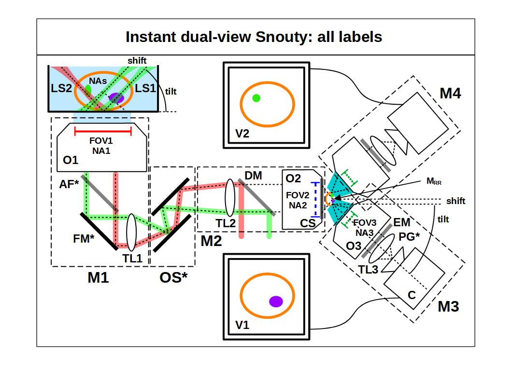
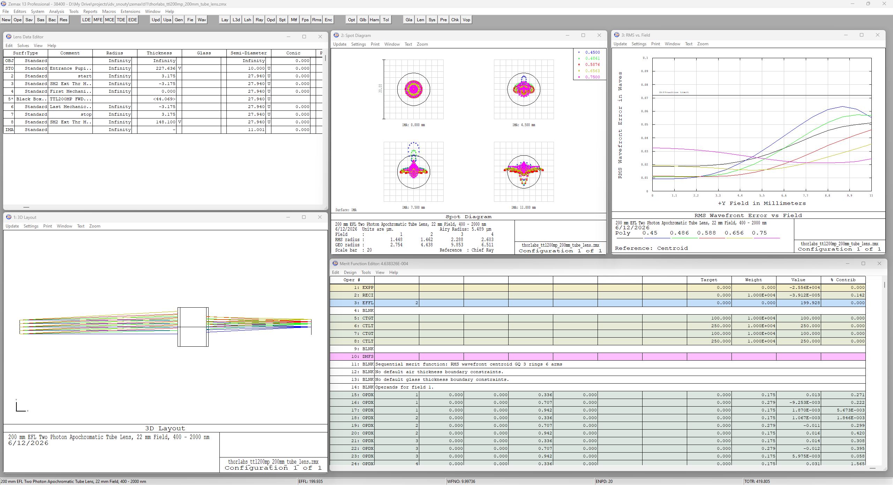
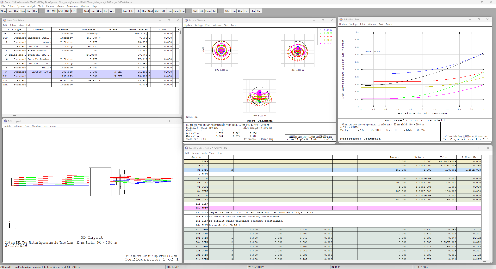
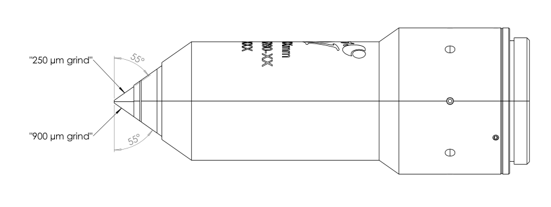
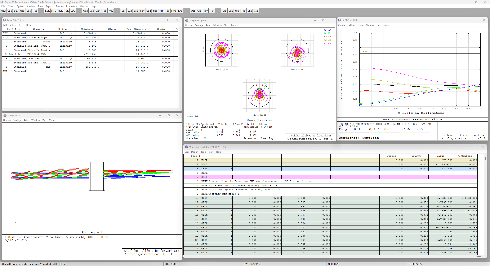
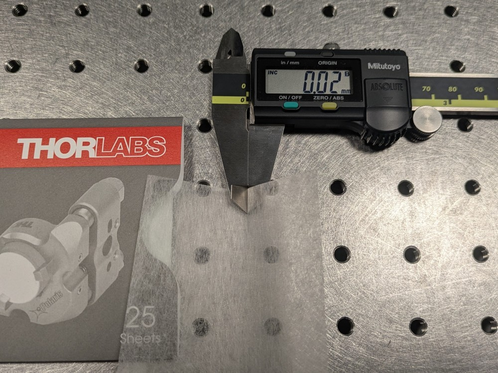
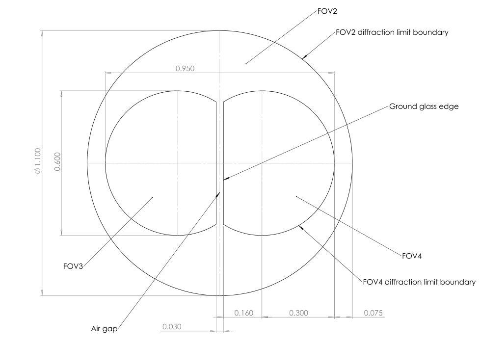
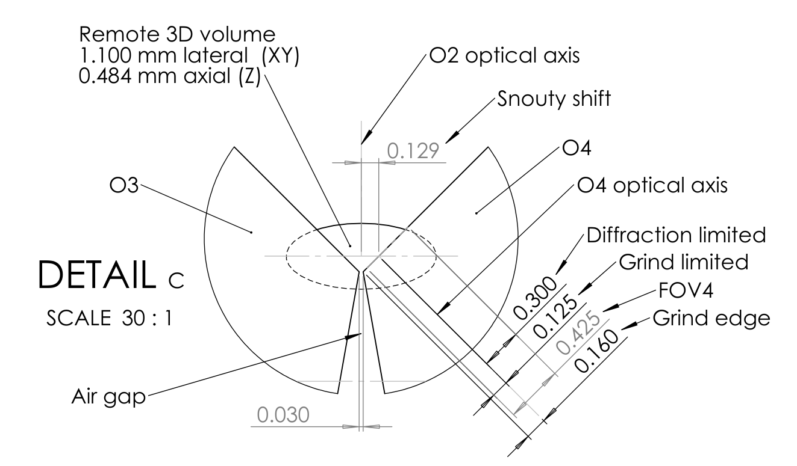

This project is maintained by amsikking from Calico Automation, and was funded by Calico Life Sciences LLC
Here we discuss the element by element choices for the emission path, why each choice was made and how other options may be attractive (Figure A1).

For objective 1 we suggest a Nikon 20x1.0 water objective (MRD77226) with a long 2.8 mm working distance (WD) and a 1100 μm FOV1 (OFN22). This combination of FOV1 and NA1 results in one of the highest SBP objectives available [Zhang 2019]. It has coverslip correction (0–0.17 mm) which enables both coverslip and water dipping modes, and the NA1 1.0 can comfortably get 2 orthogonal views in a watery sample (48.6° half angle). (This objective has 20 mm diameter BFP, a Rayleigh resolution of 0.305 μm with a 500 nm wavelength, a Nyquist pixel size of 0.153 μm and a FOV1 that is 7213 optical pixels wide, equations here). CAD here.
The Nikon 20x0.95 water objective alternative (MRD77205) has a 0.93 mm WD and a 1250 μm FOV1 (OFN25). It can only operate in coverslip mode (0.11–0.23 mm correction), and the NA1 0.95 can just barely get 2 orthogonal views in a watery sample (45.4° half angle). In practice the lower NA1 may require a higher tilt angle for M3 (e.g. 50°) which gives non-orthogonal views but results in a steeper light-sheet, a reduced Snouty shift and faster volumetric acquisition. In addition this objective is ‘plan’ corrected and has a larger FOV1 (~14%) which could be attractive for applications seeking to maximize a uniform FOV1. (This objective has a 19 mm diameter BFP, a Rayleigh resolution of 0.321 μm with a 500 nm wavelength, a Nyquist pixel size of 0.161 μm and a FOV1 that is 7787 optical pixels wide, equations here).
Hardware autofocus is highly recommended for multi-position imaging and timelapse microscopy. AF systems typically work best with coverslip samples that give a definitive reflection and are hard to implement in a dipping regime.
The Prior PureFocus850 (PF850) is a fine option.
A fold mirror here like a Thorlabs 2" elliptical mirror (BBE2-E02) can fold the optical train into the plane of the table and most builders will want this. It can also be placed after TL1.
For tube lens 1 a Thorlabs 200 mm tube lens (TTL200MP) offers easy integration and is sufficient for the default 20x1.0 objective (Figure A2). Together with O1 this produces a 20x magnification at the M1 image plane.
To take full advantage of the 20x0.95 objective FOV1 a Nikon ‘large FOV’ 200mm tube lens may be preferable (75-379).

For the optical scanner we opted for a synchronized dual-galvo arrangement with Thorlabs 20 mm galvos (QS20X-AG) to produce an almost pure lateral scan between TL1 and TL2. The optical scanner is highly recommended since it enables the fast 3D imaging the system is well suited to realize. It can be avoided with stage scanning but this is typically slower. A dual galvo scanner offers a relatively fast and optically efficient scan, and conveniently reduces the path length of the microscope. It does however introduce a finite amount of defocus (or z-scanning effect) which can be a few μm over the full FOV [Daetwyler 2023].
A lens-galvo-lens arrangement has slightly lower transmission efficiency but can have less defocus (or z-scanning effect) and using shorter focal length scan lenses can reduce the size of the galvo for an even faster scan [Millett-Sikking 2019]. This may be a good option for some builders.
For tube lens 2 we suggest a fixed 150mm effective focal length tube lens (EFL150mm), which offers easy integration and is sufficient for the default and improved designs (Figure A3). Together with a Nikon 20x air objective for O2 this yields a magnification of 15x for M2, and therefore a combined M1-M2 magnification of 1.33x (i.e. MRR for a watery refractive index sample). CAD here.
This is the location where a zoom lens could be added for dynamic correction of the remote 3D image for different sample refractive indices [Millett-Sikking 2022].

For the dichroic mirror we suggest a fixed quad line as the default (ZT405488561640rpcv2). The infinity space between TL2 and O2 is a convenient place for coupling in the light-sheets. Placing the dichroic closer to O2 will alleviate the clear aperture requirements. Note that thinner (i.e. 1mm) dichroics are preferable to thicker ones that can perturb the infinity space and degrade the remote 3D image.
It's possible with a careful optomechanical design to add a dichroic slider (manual or automated) in this location and enable a wider variety of spectral options.
For objective 2 we selected a Nikon 20x air objective to pair with TL2 to give a remote space magnification of 1.33x (i.e. MRR for a watery refractive index sample). The current design uses a Nikon 20x0.45 objective (MRH08230) with an extra long 8.2–6.9 mm WD, a 1100 μm FOV2 (OFN22) and coverslip correction (0-2 mm). The extra long WD enables iDV-Snouty with two stock ‘250 μm grind’ AMS-AGY v3 objectives (Figure 5), but the NA2 0.45 limits NA1 (i.e. the sample NAs) to 0.6 (equation 4). The 0 mm setting on the correction collar is convenient for avoiding an additional coverslip and the 1100 μm FOV2 is plenty for the Snouty v3 objectives (see 2D FOV for more detail). (This objective has a 9 mm diameter BFP, a Rayleigh resolution of 0.678 μm with a 500 nm wavelength, a Nyquist pixel size of 0.339 μm and a FOV2 that is 3246 optical pixels wide, equations here). CAD here.
The improved design uses a Nikon 20x0.80 objective (MRD70270) with a short 0.8 mm WD, a 1250 μm FOV2 (OFN25) and is coverslip corrected for 0.17 mm. This option can retain the full NA1 (e.g. NA 1.0) and has a larger FOV2 (~14%), but the short working distance requires two modified ‘dual-grind’ AMS-AGY v3 objectives to avoid collision at the O2-O3 interface (Figure 5). (This objective has a 16 mm diameter BFP, a Rayleigh resolution of 0.381 μm with a 500 nm wavelength, a Nyquist pixel size of 0.191 μm and a FOV2 that is 6557 optical pixels wide). CAD here.
A coverslip is not needed for the current design with the Nikon 20x0.45 O2 if the correction collar is set to the 0 mm setting.
The improved design with the Nikon 20x0.8 O2 needs a 0.17 mm thick coverslip here (i.e. #1.5). This can be any high quality #1.5 coverslip (e.g. CG15NH1) but holding it in place with glue or mechanics can be tricky for an inexperienced builder. ASI can glue a coverslip onto O2 as a service if this step is problematic.
For objective 3 (Snouty) we chose the ‘250 μm grind’ AMS-AGY v3 objective with NA3 0.99, an ultra short 5 μm WD, 7.2mm EFL and a 425 \(\times\) 600 μm diffraction limited (DL) FOV3. The asymmetric FOV3 is optically limited to 125 μm in 1 direction by a mechanical grind that is 160 μm from the optical axis. In the iDV mode the Snouty objectives are arranged in a non-traditional way so that their ground edges are almost touching (Figure 5), with a small O3-O4 air gap between them (e.g. ~30 μm). Minimizing the air gap is important for maximizing the acquisition rate boost (equation 13). This arrangement places the bulk of the glass tip towards O2 where an extra long working distance is needed to avoid mechanical collision (Figure 5). (This objective has a 14.25mm diameter BFP, a Rayleigh resolution of 0.308 μm with a 500 nm wavelength, a Nyquist pixel size of 0.154 μm and a FOV3 that is 2759 \(\times\) 3895 optical pixels wide, equations here).
The improved design uses a modified ‘dual-grind’ AMS-AGY v3 objective where the glass that is protruding towards O2 has been removed. This enables the improved choice for O2 (Figure 5) and retains the maximum NA1 (e.g. NA 1.0). This new version could have a ‘250 μm grind’ on one side and a ‘900 μm grind’ on the other side, effectively replacing the current AMS-AGY v3 offerings. This results in a single unified 'dual-grind' AMS-AGY v3 design that can be used for high NA single-view, low NA single-view and dual-view systems (Figure A4). CAD here.

For the emission filter we suggest a fixed quad band as the default (ZET405488561640mv2). The infinity space between O3 and TL3 is a convenient location.
A fast filter wheel with different filter options can be a good addition here for spectral flexibility. The Sutter Instruments Lambda 10-3 is a fine option (Lambda10-3).
For tube lens 3 a Thorlabs 180mm tube lens (TTL180-A) is a reasonable choice to pair with O3 and gives an M3 magnification of 25x. The proposed camera pixel sizes are in the 4.5–4.6 μm range which at 25x equates to a pixel size of 0.180–0.184 μm at O3. This is a good match for the Nyquist pixel size of O2 in the improved design (0.191 μm) and can work with the current design (0.339 μm) with 2x2 binning (i.e. 0.360–0.368 μm). With a 14.25 mm diameter pupil (AMS-AGY v3 BFP) the TTL180-A can comfortably image a 23 mm diameter FOV which is enough for both camera options (Figure A5). The default camera is size is 20.314 \(\times\) 10.893 mm which at 25x equates to a 813 \(\times\) 436 μm FOV3.
To explore an even larger FOV we can use the EFL150mm tube lens to give an M3 magnification of 20.83x, which equates to a nominal 1106 \(\times\) 885 μm FOV3 with the large format 23.040 \(\times\) 18.432 mm alternative camera (see 3D FOV for more detail).

Projection galvos offer an opportunity to optically shear the image (i.e. shift the image laterally) just before the camera. If the optical shear is calibrated correctly, and running during a scan with the primary optical scanner (OS), then 2D sum projection images of the 3D sample can be acquired with a single camera exposure [Chang 2021]. Adjusting the shear rate of the projection galvos (relative to the primary optical scanner) then allows for projections at arbitrary angles and can be attractive for ultra-fast imaging of sparse 3D objects. Here the iDV mode enables 2 projections to be acquired simultaneously, potentially giving all of the necessary information for a 3D sample in a single scan.
For the default camera we suggest the Excelitas sCMOS (pco.edge 10 bi CLHS). It has a rolling shutter with 4416 \(\times\) 2368 square pixels that are 4.6 μm wide (i.e. 20.314 \(\times\) 10.893 mm). The M3 magnification is 25x so we can explore a 813 \(\times\) 436 μm FOV3, or a 610 \(\times\) 327 μm FOV1 in the sample (reduced by a factor of MRR). The 4.6 μm pixels are 0.184 μm at O3, which is a good match for the improved design (0.191 μm target) and can be used with the current design (0.339 μm target) with 2x2 binning to get 0.368 μm pixels. The high pixel rate (1.47 GPixel/s) can be leveraged with high laser power and fast triggering to give very high frames rates (e.g. 557fps with 4416 \(\times\) 512 pixels) and therefore a high 3D acquisition rate. The high peak quantum efficiency (85%) and low read noise (1.3e- rms) should be good for many applications. The rolling shutter is not blind to light before exposure and during readout which could result in ‘cross talk’ between the 2 views when imaging in a deep regime (Figure 4).
For a larger FOV and deeper imaging a larger sensor with a global shutter like the Tucsen sCMOS camera (Dhyana 2100) could be attractive.
Here we discuss some of the important system level considerations and specifications.
We opted for water immersion objectives for O1 since they are available with high NA (i.e. ~1.0) and mm scale fields of view (i.e. 20x). Water immersion is typically well matched for the refractive index of live biological samples where light-sheet microscopy is most relevant and in this regime we can use standard focus and remote refocus together for extra focal range [Millett-Sikking 2022] . Water immersion is also well behaved with lens hydration schemes (i.e. pumps etc) that may be needed for multi-position or timelapse imaging and is easily cleaned away from the objective and sample. Given this choice the magnification of the remote space (MRR) is set to the refractive index of water (1.33).
For the default Nikon 20x1.0 water objective we suggest a tilt angle of 45° to give orthogonal dual-views (Figure 1). This is close to the optimum tilt angle for this objective and offers ample flexibility on the choice of light-sheet parameters. The AMS-AGY v3 objectives have a 55° grind angle and can therefore accommodate a low 35° tilt before they collide in the dual-view mode (Figure 5 with the O3-O4 bodies in contact). This allows for shallow light-sheets if needed, or alternatively, arbitrarily high tilt angles can also be chosen for steep light-sheets but with diminishing returns on transmission efficiency [Sommernes 2024].
For the alternative Nikon 20x0.95 water objective a slightly steeper tilt angle like ~48° may be needed due to the lower NA.
A concrete design is not provided here but some general excitation considerations and specific implementations on a similar platform have been shared previously [Chen 2022, Chen 2025] . Recommendations include ~100 mW or more laser power per line, using a Powell and cylindrical lens combination for efficient line generation, followed by an achromatic cylindrical lens to create a light-sheet that can be relayed to O1. Large amplitude gimbal mirrors in conjugate image and back focal planes are helpful for macroscopic alignment of the light-sheet to the tilted image plane at O1. Electronically controlled galvos (or similar) in conjugate image and back focal planes are helpful for fine tuning the light-sheet position on a per sample basis in software. These can also be used to homogenize illumination and suppress streaking and shadowing artifacts by dithering and shaking the light-sheet (i.e. high frequency small amplitude lateral and angular translations during image capture).
If room temperature is maintained to within ±5°C then a 30 μm air gap between the Snouty objectives should be plenty to avoid collision from thermal expansion (i.e. 15 μm per objective). This can be further alleviated with active [Nguyen 2025] or passive temperature stabilization which is highly recommended. 30 μm is about the thickness of a standard piece of Thorlabs lens tissue (MC-5). With the O3-O4 ground glass edges pinching the lens tissue the separation will be about 20 μm, releasing the lens tissue will give something like a 30 μm gap (Figure A6).

Before considering the 3D FOV it can be helpful to first consider the 2D FOV limits for an iDV-Snouty where M1, M2, M3 and M4 are all axially aligned (even if M3 and M4 would collide in practice). Both choices of O1 give a large FOV1 (1100–1250 μm) and so we would need an extra large FOV2 (1467–1667 μm) to capture the full field in the remote space at O2 (equation 9 with MRR at 1.33x). In practice our O2 options limit FOV2 to 1100–1250 μm, but this is still enough to comfortably fit 2 views from the ‘250 μm grind’ AMS-AGY v3 objective in an axially aligned setup (Figure A7). Specifically, if we take the grind distance (160 μm) with the air gap per objective (15 μm) and half the optical FOV (300 μm) then this totals 950 μm for 2 views (i.e. well within FOV2). So we can see that in the 2D case (i.e. without tilting) we can double the FOV of a single view Snouty light-sheet microscope.

The M1-M2 pair produce a remote 3D volume at O2 with a diffraction limited range that typically has an ellipsoid shape, with an aspect ratio that is wider laterally than axially at high NA. Here the lateral range of the remote 3D volume is limited by O2 to 1100 μm in the current design (Figure A8) and 1250 μm in the improved design (Figure 7). To estimate the axial range in both designs we can first estimate the range at O1 for the default Nikon 20x1.0 water objective which is ±182 μm [Millett-Sikking 2022, equation a10]. For the remote space range we can then magnify by MRR at 1.33x to get a range of ±242 μm or 484 μm total.
To first order the AMS-AGY v3 objective has a maximum optical FOV of ±300 μm, which equates to ±212 μm axially with a 45° tilt. So before considering the grind or any lateral shifting we can see that the Snouty axial FOV (±212 μm at 45°) is within the axial range of the remote refocus (±242 μm). This is a good starting point since we are fully utilizing the Snouty FOV to collect axial information with some extra axial range still available in the remote 3D volume.
In practice the '250μm grind' on the AMS-AGY v3 objective and the '250μm grind' on the newly proposed ‘dual-grind’ AMS-AGY v3 objective is 160 μm from the optical axis (2D drawings here and here). This limits the diffraction limited FOV to 125 μm in 1 direction and 300 μm in the other, so the total FOV is only 425 μm in the grind limited direction. If we now assume an iDV-Snouty arrangement with a 45° tilt and a 30 μm air gap between the Snouty objectives we can see from the 2D drawing that even with the ~129 μm Snouty shift that the Snouty FOV remains essentially within the remote 3D volume (Figure A8, Figure 7). This is a good practical result where we can see that the iDV-Snouty arrangement is doubling the available FOV (similar to the 2D FOV but with the tilt included).

We can now evaluate the size of the iDV-Snouty 3D FOV. For each Snouty in the remote space (O3 and O4) we have a total FOV that is 425 μm in the grind limited (light-sheet propagation) direction, but still 600μm in the non grind limited (light-sheet width) direction. So de-magnifying back to the sample space at O1 by 1.33x we have an expected FOV in 'light-sheet co-ordinates' that is 450 \(\times\) 319 μm (width \(\times\) propagation). We can scan O1 up to the limits of FOV1 which is 1100 μm in the default design and we have 2 instant views, which gives a total 3D FOV of 450 \(\times\) 1100 \(\times\) 319 μm (width \(\times\) scan \(\times\) propagation) \(\times\) 2 views. Converting to 'traditional Cartesian co-ordinates' with a 45° tilt equates to 450 \(\times\) 1100 \(\times\) 225 μm (X \(\times\) Y \(\times\) Z) \(\times\) 2 views.
So far we have only considered the diffraction limited FOV but we can look beyond this up to the limits of the camera chip. The default camera is 20.314 mm \(\times\) 10.893 mm, which is 813 \(\times\) 436 μm (width \(\times\) propagation) at FOV3 with an M3 magnification of 25x. On this basis we can explore the sample up to 609 \(\times\) 1100 \(\times\) 327 μm (width \(\times\) scan \(\times\) propagation) \(\times\) 2 views or 609 \(\times\) 1100 \(\times\) 231 μm (X \(\times\) Y \(\times\) Z) \(\times\) 2 views.
In practice the usable FOV may be reduced by refraction, scattering and absorption of the light-sheet or emission light from the sample or non-ideal behaviour from the optical system.
So far we have restricted ourselves to preserving resolution and retaining the diffraction limited (DL) FOV, and at most exploring some of the non DL FOV with the edges of the camera chip. However for some applications it may make sense to trade resolution for FOV more directly. For example we can use a larger chip like the Tucsen sCMOS camera (Dhyana 2100) that is 23.040 \(\times\) 18.432 mm or use a shorter tube lens like the EFL150mm to reduce the M3 magnificationt to ~20.83x.
In principle this gives a 1106 \(\times\) 885 μm FOV3, but in practice the 885 μm is limited by the 'dual-grind' to 575 μm (Figure 7). So de-magnifying back to the sample space at O1 by 1.33x gives 830 \(\times\) 432 μm (width \(\times\) propagation). Including the O1 scan and the 2 views then equates to 830 \(\times\) 1100 \(\times\) 432 μm (width \(\times\) scan \(\times\) propagation) \(\times\) 2 views or 830 \(\times\) 1100 \(\times\) 306 μm (X \(\times\) Y \(\times\) Z) \(\times\) 2 views.
The lower M3 magnification means that the 4.5 μm pixels will be oversized for Nyquist (i.e. 0.216 μm vs 0.191 μm target) which will slightly lower the resolution. A similar approach was used in DaXi [Yang 2022].
If we assume an iDV-Snouty arrangement with a 45° tilt and a 30 μm air gap between the Snouty objectives then this results in a Snouty shift (equation 12) of ~129μm (Figure A8, Figure 7). We can calculate this directly by adding the 160 μm at 45° (~113 μm) to the air gap per objective (15 μm). FOV1 is at least 1100 μm (depending on the choice of O1) and we have a remote magnification (MRR) of 1.33x so from equation 13 we can expect a 3D acquisition rate boost of at least 1.7.
The 3D acquisition rate boost can be increased further with a larger FOV1, a more aggressive grind on the Snouty objectives and a smaller air gap.